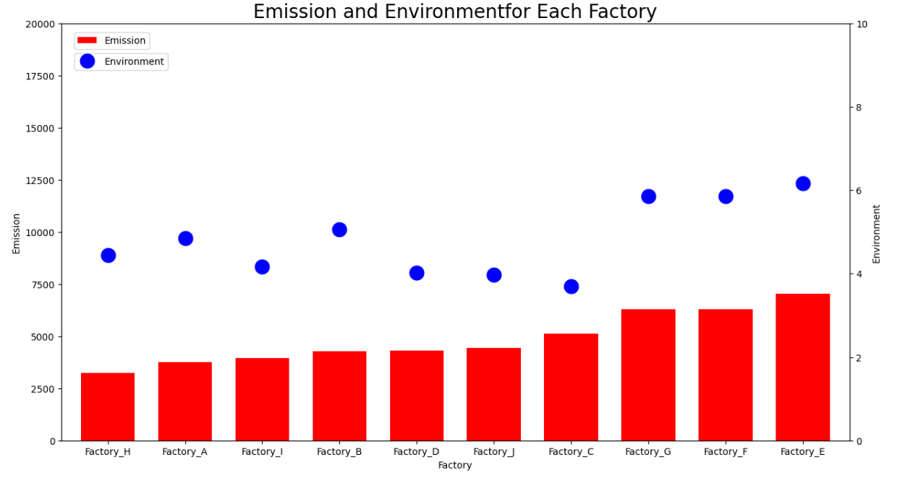

학교 재학 중 했던 것들
대지중학교 방과후 코딩봉사
2023년 1학기 때 대지중학교에서 Aegis동아리에 부탁을 했었었다. 대지중학교 학생들에게 코딩을 가르쳐달라는 것이었다. 신청자를 받아 코딩봉사를 시작하게 되었다. 수업방식은 온라인으로 진행되었다. 디스코드를 활용하여 화면공유를 하면서 수업을 진행하였는데 html에 관한 수업내용이었다. 그 당시 나는 html을 알긴 하지만 익숙하지는 않은 상태였다. 그래서 수업준비를 하며 더 많은 태그들을 배웠던 것 같다. 또한 기본개념이라서 내가 놓쳤던 부분까지 알게되어 나에게도 도움이 되는 그런 봉사활동이었다.
간단한 포토샵 프로그램 만들기(Python)
2022년 2학기 때 간단한 포토샵 프로그램을 파이썬으로 만들어보았다. 프로그램을 만들면서 가장 어려웠던 점을 꼽자면 바로 tkinter를 사용하는 것이었다. tkinter를 사용하여 GUI를 구현할 수 있다. 또한 이미지 편집 소프트웨어인 이미지 매직을 사용하였다. 확대, 축소, 반전, 회전, 밝기, 선명도, 흑백 등을 설정할 수 있도록 구현하였다.
판다스를 활용한 대기오염에 대한 분석과 이러한 문제에 대한 해결방안 제시
대기오염의 원인이 무엇인지 파악하여 데이터를 사전처리하고 그래프로 시각화해주었다. 그리고나서 이 그래프를 통해 대기오염의 주 원인을 분석하여 이를위한 해결방안을 구체적으로 제시하여 예상되는 실행결과를 그래프로 나타내주었다.


윅스를 이용한 나만의 홈페이지 만들기
wix라는 것을 이용하여 템플릿을 만들고 나만의 홈페이지를 만들어 컴퓨터 네트워크라는 과목에서 배운
것들을 정리하였다.
나의 홈페이지
간단한 멀티태스킹 운영체제 시뮬레이터 구현(라운드로빈)
파이게임(Pygame) 라이브러리를 사용하여 라운드-로빈(Round-Robin) 스케줄링 알고리즘의 시뮬레이션을 시각적으로 표현하는 프로그램을 구현하였다. 라운드-로빈 스케줄링은 프로세스 스케줄링 알고리즘 중 하나로, 각 프로세스에 동일한 시간 할당량(타임 퀀텀)을 부 여하고, 이를 기반으로 프로세스들을 순차적으로 실행시키는 방식이다.
C++ 스터디장
2022년 여름방학 때 동기들끼리 하는 스터디를 하였다. 내가 c++을 잘 알고 있어서 스터디장을 맡게 되었다. 스터디장이 스터디원들에게 개념을 알려주고 문제를 풀게 한 뒤 문제를 풀이해주는 방식으로 스터디를 진행하였다. 개념을 알려주기 위해 나도 정리를 한 뒤 자료를 가져갔었는데 정리를 하는 과정에서 내가 이미 알고있는 개념들을 한 번 더 정리할 수 있는 기회가 된 것 같아 도움이 많이 되었다. 또한 문제를 푸는 과정에서 나도 모르는 것도 있어서 같이 공부하면서 배울 수 있었던 것 같다. 그리고 개개인의 문제풀이 방식이 달라서 이렇게 풀 수도 있구나 라는 것을 깨달으면서 어떤 것이 더 효율적인 코드가 되는지도 알게 되었다. 여러모로 나에게 도움이 많이 되었던 활동이었다.